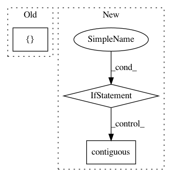

e25c3820aaa1ebb9c0bf7731467e24a2a2592a54,sru/cuda_functional.py,SRU_Compute_GPU,forward,#SRU_Compute_GPU#Any#Any#Any#Any#Any#Any#,488
Before Change
stream, fwd_func, bifwd_func, _, _ = self.get_functions()
FUNC = fwd_func if not self.bidirectional else bifwd_func
FUNC(args=[
u.contiguous().data_ptr(),
x_ptr,
weight_c.data_ptr(),
bias.data_ptr(),
init_.contiguous().data_ptr(),
mask_c.data_ptr() if mask_c is not None else 0,
mask_pad.contiguous().data_ptr() if mask_pad is not None else 0,
length,
batch,
d,
k_,
h.data_ptr(),
c.data_ptr(),
self.activation_type,
skip_type],
block=(thread_per_block, 1, 1),
grid=(num_block, 1, 1),
stream=stream
After Change
bias,
init_.contiguous(),
mask_c if mask_c is not None else empty_ftensor,
mask_pad.contiguous() if mask_pad is not None else empty_btensor,
length,
batch,
d,
In pattern: SUPERPATTERN
Frequency: 3
Non-data size: 3
Instances
Project Name: asappresearch/sru
Commit Name: e25c3820aaa1ebb9c0bf7731467e24a2a2592a54
Time: 2019-10-22
Author: taolei@csail.mit.edu
File Name: sru/cuda_functional.py
Class Name: SRU_Compute_GPU
Method Name: forward
Project Name: erikwijmans/Pointnet2_PyTorch
Commit Name: 65a127f3d23527711259b6cdcce4e946b876f49c
Time: 2018-02-10
Author: ewijmans2@gmail.com
File Name: models/Pointnet2SemSeg.py
Class Name: Pointnet2SSG
Method Name: forward
Project Name: asappresearch/sru
Commit Name: 7c2cf787d2cd4028dd25cb8af19b653c9b459e32
Time: 2019-08-24
Author: taolei@csail.mit.edu
File Name: sru/cuda_functional.py
Class Name: SRU_Compute_GPU
Method Name: forward